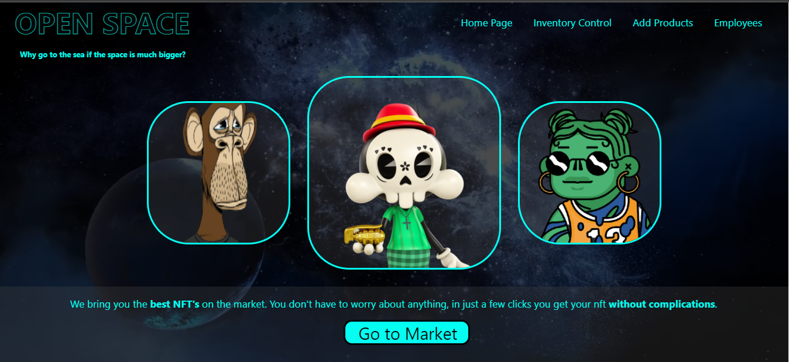

Open Space
Design de loja virtual de NFT's.
A página foi uma proposta da Labenu para a prática de HTML e CSS recém aprendido.
Consistia nas seguintes páginas: Home: Homepage da nossa loja, trazer um ambiente onde mostrasse sobre o que se travata nosso negócio. Controle de inventário: Praticar estilização de tabelas, que era como nossos produtos era apresentados. Adicionar produto: Objetivo era familiarizar com a estilização de forms. Lista de funcionários: Apenas estilização de uma lista simples de funcionários fictícios.
Sobre o projeto: Como as páginas secundárias tinham o objetivo de praticar elementos específicos, quis fazer da home page o destaque do meu site. Consegui trazer alguns efeitos de transparência e também colocar um vídeo com filtros como plano de fundo. As tabelas tive um pouco de dificuldade em estilizar, algo que consegui corrigir nas semanas seguintes de curso.